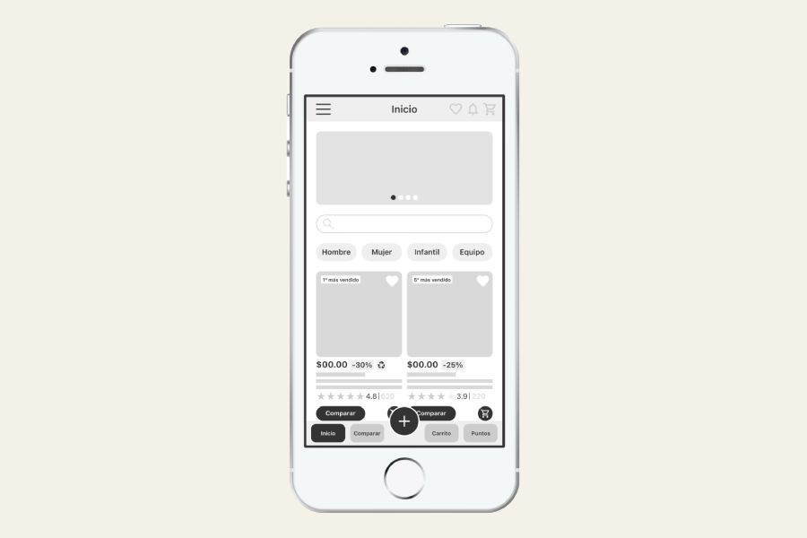

José Vázquez
Rol: UX Designer
Duración: Junio 2025 – Abril 2026
Tipo: Proyecto conceptual
Rol: UX Designer
Duración: Junio 2025 – Abril 2026
Tipo: Proyecto conceptual
Los usuarios tienen dificultades para identificar y seleccionar productos de camping adecuados a su contexto, lo que genera confusión, abandono de compra y baja confianza en la decisión.
Diseñar una experiencia de búsqueda y selección que reduzca la complejidad, facilite la comparación y ayude a los usuarios a tomar decisiones informadas.
Las necesidades cambian según el tipo de usuario (familia, pareja, grupo o individual), por lo que un catálogo genérico no responde a sus decisiones reales.
Se identificaron cuatro perfiles principales: familias, parejas, grupos de amigos y aventureros solitarios, cada uno con necesidades específicas en seguridad, portabilidad, coordinación o especialización.
Se diseñó un sistema de filtros adaptado por tipo de usuario, permitiendo reducir la complejidad de búsqueda y facilitar la selección de productos relevantes.
Flujo principal: búsqueda → filtrado → comparación → compra

Ver prototipoSe priorizó el acceso rápido al buscador, la organización por categorías y el uso de etiquetas, reseñas y filtros para apoyar la toma de decisiones.
Se simplificaron flujos, se ajustaron etiquetas y se mejoró la estructura de la interfaz.
 Ver prototipo
Ver prototipo
Se rediseñó la navegación, se mejoraron los filtros por tipo de usuario y se priorizó la información clave para reducir la incertidumbre y facilitar la elección.
La solución mejora la experiencia de búsqueda, reduce la fricción y facilita la toma de decisiones para distintos tipos de usuario.
La segmentación por tipo de usuario es clave en contextos donde las necesidades cambian significativamente. Además, validar decisiones con usuarios permite reducir errores y mejorar la claridad de la experiencia.